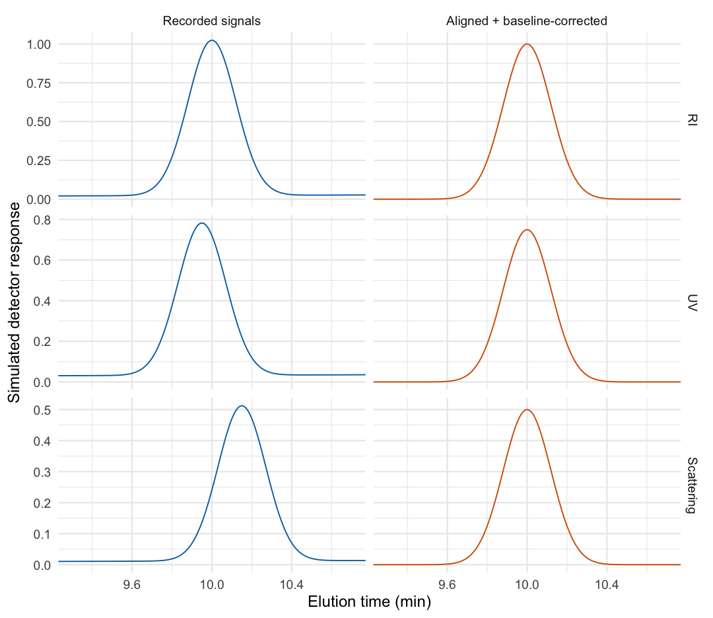

measure.sec adds SEC/GPC detector processing, calibration and molecular-weight calculations to measure recipes. It also provides copolymer composition, protein aggregation, branching and system-suitability calculations.
Installation
Install both development packages from GitHub:
# install.packages("pak")
pak::pak(c("JamesHWade/measure", "JamesHWade/measure.sec"))Align and baseline-correct detector signals
This example creates three Gaussian signals with known offsets and linear baselines. UV is 0.05 minutes earlier than RI; scattering is 0.15 minutes later. At 1 mL/min, those offsets are also the delay volumes in mL. The responses are arbitrary simulated values. Give sample_id an ID role to keep one curve per sample and detector.
library(measure)
library(measure.sec)
library(recipes)
library(dplyr)
library(tidyr)
library(ggplot2)
elution_time <- seq(9, 11, by = 0.01)
gaussian <- function(centre) exp(-0.5 * ((elution_time - centre) / 0.12)^2)
detector_data <- tibble(
sample_id = "illustrative-polymer",
elution_time,
ri_signal = 0.02 + 0.004 * (elution_time - 9) + gaussian(10),
uv_signal = 0.03 + 0.003 * (elution_time - 9) + 0.75 * gaussian(9.95),
mals_signal = 0.01 + 0.002 * (elution_time - 9) + 0.5 * gaussian(10.15)
)
rec <- recipe(~ ., data = detector_data) |>
update_role(sample_id, new_role = "id") |>
step_measure_input_long(ri_signal, location = vars(elution_time), col_name = "ri") |>
step_measure_input_long(uv_signal, location = vars(elution_time), col_name = "uv") |>
step_measure_input_long(mals_signal, location = vars(elution_time), col_name = "mals") |>
step_sec_baseline(measures = c("ri", "uv", "mals")) |>
step_sec_detector_delay(
reference = "ri",
delay_volumes = c(uv = -0.05, mals = 0.15),
flow_rate = 1,
elution_units = "min",
method = "interpolate"
)
prepped <- prep(rec)
result <- bake(prepped, new_data = NULL)
result |> select(sample_id, ri, uv, mals)
#> # A tibble: 1 × 4
#> sample_id ri uv mals
#> <chr> <meas> <meas> <meas>
#> 1 illustrative-polymer [201 × 2] [201 × 2] [201 × 2]A positive target delay moves its signal earlier; a negative delay moves it later. Use measured delays and flow rate for your own acquisition. The example shows the correction convention; it does not estimate an instrument delay. Baseline subtraction uses the recorded edge regions before alignment. The interpolated shift leaves NA where the target was not sampled.
example_id <- "illustrative-polymer"
raw_sample <- detector_data |> filter(sample_id == example_id)
baked_sample <- result |> filter(sample_id == example_id)
raw_plot <- raw_sample |>
pivot_longer(ends_with("_signal"), names_to = "detector", values_to = "value") |>
transmute(
detector = sub("_signal$", "", detector),
location = elution_time, value, stage = "Recorded signals"
)
processed_plot <- bind_rows(lapply(c("ri", "uv", "mals"), function(detector) {
curve <- baked_sample[[detector]][[1]]
tibble(detector, location = curve$location, value = curve$value,
stage = "Aligned + baseline-corrected")
}))
plot_data <- bind_rows(raw_plot, processed_plot) |>
mutate(
detector = factor(detector, levels = c("ri", "uv", "mals"),
labels = c("RI", "UV", "Scattering")),
stage = factor(stage, levels = c("Recorded signals", "Aligned + baseline-corrected"))
)
peak_time <- raw_sample$elution_time[which.max(raw_sample$ri_signal)]
ggplot(plot_data, aes(location, value, colour = stage)) +
geom_line(linewidth = 0.45, na.rm = TRUE) +
facet_grid(detector ~ stage, scales = "free_y") +
coord_cartesian(xlim = peak_time + c(-0.7, 0.7)) +
scale_colour_manual(values = c("#0072B2", "#D55E00"), guide = "none") +
labs(x = "Elution time (min)", y = "Simulated detector response") +
theme_minimal(base_size = 12) +
theme(plot.background = element_rect(fill = "white", colour = NA))
Known-offset simulated signals before and after linear baseline subtraction and detector-delay correction. After correction, all three peak maxima occur at 10 minutes. Left and right panels share a response scale within each detector; scales differ between detectors.
Concentration and molecular-weight calculations need their own response calibration and unit declarations. The current step_sec_mals() is a calibrated single-angle approximation; multi-angle extrapolation and radius of gyration are outside that step’s implementation.
Available steps
Detector processing
| Step | Description |
|---|---|
step_sec_ri() |
RI detector with dn/dc normalization |
step_sec_uv() |
UV detector with extinction coefficient |
step_sec_dad() |
Diode array detector processing (multi-wavelength UV) |
step_sec_mals() |
Single-angle light-scattering approximation; multi-angle fits and Rg are not implemented |
step_sec_lals() |
MW estimate from calibrated low-angle scattering and concentration |
step_sec_rals() |
MW estimate from calibrated right-angle scattering and concentration |
step_sec_dls() |
Dynamic light scattering for Rh and diffusion |
step_sec_viscometer() |
Differential viscometer processing |
step_sec_concentration() |
Convert signal to concentration |
step_sec_intrinsic_visc() |
Intrinsic viscosity calculation |
Preprocessing
| Step | Description |
|---|---|
step_sec_detector_delay() |
Correct inter-detector volume delays |
step_sec_baseline() |
Subtract an estimated detector baseline |
Molecular weight
| Step | Description |
|---|---|
step_sec_mw_averages() |
Calculate Mn, Mw, Mz, dispersity |
step_sec_mw_fractions() |
Calculate MW fractions above/below cutoffs |
step_sec_mw_distribution() |
Generate differential/cumulative MWD |
step_sec_conventional_cal() |
Narrow standard calibration (polynomial fits) |
step_sec_universal_cal() |
Universal calibration with Mark-Houwink |
Composition analysis
| Step | Description |
|---|---|
step_sec_uv_ri_ratio() |
UV/RI ratio for heterogeneity detection |
step_sec_composition() |
Copolymer composition from UV/RI |
Protein SEC
| Step | Description |
|---|---|
step_sec_protein() |
Protein workflow: baseline, aggregate and oligomer calculations |
step_sec_aggregates() |
HMWS/monomer/LMWS quantitation |
step_sec_oligomer() |
Detailed oligomer species analysis |
Code of conduct
The Contributor Code of Conduct applies to contributions to this project.